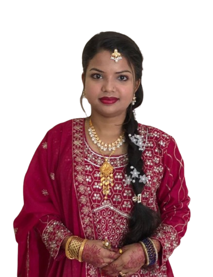

Two Computer Science & Engineering graduates who built Softorio from the ground up. Every project is led by engineers who understand the technology — not just manage it.

Both founders hold a Bachelor of Science in Computer Science & Engineering — which means when you work with Softorio, you're working directly with people who understand the technology at every level.
Arif founded Softorio in 2021 while studying Computer Science & Engineering — turning years of freelancing into a full-service digital agency serving international clients. He also founded Hostorio, a web hosting company providing shared, business, reseller and VPS hosting.
A cloud and systems specialist, he architects infrastructure on AWS, manages Linux servers (Ubuntu & AlmaLinux), and leads WordPress development end to end. He's a Fiverr Level 2 Seller, an Upwork Top Rated freelancer, and an AWS-certified engineer.
Asma co-leads Softorio with a focus on research, quality, and emerging technology. A Computer Science & Engineering engineer from Green University of Bangladesh, she brings a strong analytical foundation in programming, databases, networking, and artificial intelligence.
Her passion lies in cybersecurity and machine learning — particularly AI-based cyber threat detection and secure, intelligent systems. That research mindset shapes how Softorio approaches security, reliability, and innovation on every project.
It started the way most good things do — with curiosity, late nights, and a refusal to settle for "good enough."
In 2021, two Computer Science & Engineering students at Green University of Bangladesh decided to turn freelance expertise into something bigger. Arif — already a Top Rated Upwork freelancer and Fiverr Level 2 Seller — had delivered hundreds of websites and managed servers for clients worldwide. Asma brought the research rigour: a deep focus on security, AI, and engineering systems that don't just work, but work reliably.
Together they built Softorio into a full-service digital agency — web development, cloud, hosting, SEO, and automation — serving clients worldwide from Dhaka, Bangladesh. Two companies, hundreds of projects, and one shared standard: do it right, every time.
Both founders are CSE engineers — we lead with technical depth, not sales talk.
From server uptime to security hardening, we obsess over the things that keep clients online.
A research-driven approach means we bring AI, automation, and modern cloud to every solution.
Technology should serve people. Every decision starts with what's best for the client.
"We're not just business partners — we're partners in life. Softorio is what happens when two people who trust each other completely decide to build something they believe in. That trust shows up in every line of code and every client we serve."
Whether it's a website, cloud infrastructure, hosting, or a complete digital solution — we'd love to hear about your project.